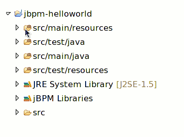
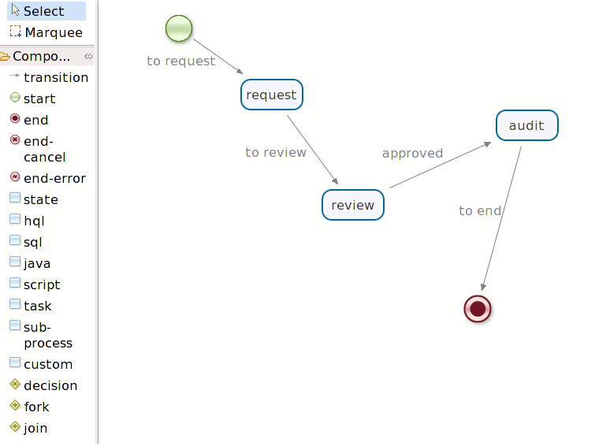

Getting Started with jBPM 4.0 (Part II)
In this blog entry, we are going to use the eclipse GUI to build a helloworld process, and then write a unit test to verify the process.
Firstly, I assumed that you've successfully installed the eclipse GUI, if you haven't done so, please refer to the first Part blog entry.
Create Project and Process Definition
Then, we will create a java project, I used the following project layout(maven way).

we will put the process definition file into the main/resource folder, and the test case and its resources in the src/test folder.
In this helloworld process, we will do the following process scenario, we will have a 'java node', to make a request, and then we add the 'review task node', and then if it is 'approved', it will lead to the 'audit state node'. Of course, we will include the 'start' and the 'end' node in this process, so the finished process image would be like:

In this process definition, we are using a java node to be the 'request' node, its java code as following:
package org.jbpm.helloworld;
public class Println {
public void request() {
System.out.println("--------------------");
System.out.println("Made a request.....");
System.out.println("---------------------");
}
}
The process definition xml is as following:
<process name="helloworld" xmlns="http://jbpm.org/4.0/jpdl">
<start name="start">
<transition name="to request" to="request"/>
</start>
<end name="end"/>
<java class="org.jbpm.helloworld.Println" method="request" name="request">
<transition name="to review" to="review"/>
</java>
<task assignee="alex" name="review">
<transition name="approved" to="audit"/>
</task>
<state name="audit">
<transition name="to end" to="end"/>
</state>
</process>
The xml itself is very easy to understand, you might notice that 'g' attribute in your process definition file, that is only used by the Eclipse GUI.
Verify the process
Once we've finished the process, we want to verify whether it is as same as we expected, with the jBPM 4.0, it is very easy for us to verify it, without deploying it into the container.
With the following 2 steps, we can easily test the process by using API. Because the jbpm.jar doesn't include the jbpm.hibernte.cfg.xml and jbpm.cfg.xml, we need to configure it by ourselves for the test purpose. (However, The deployed jbpm in JBoss container has these two files by default)
Add the jbpm.hibernate.cfg.xml and jbpm.cfg.xml
we put these two files into the src/test/resource folder. the jbpm.hibernate.cfg.xml would be like as following:
<hibernate-configuration>
<session-factory>
<property name="hibernate.dialect">org.hibernate.dialect.HSQLDialect</property>
<property name="hibernate.connection.driver_class">org.hsqldb.jdbcDriver</property>
<property name="hibernate.connection.url">jdbc:hsqldb:mem:.</property>
<property name="hibernate.connection.username">sa</property>
<property name="hibernate.connection.password"></property>
<property name="hibernate.hbm2ddl.auto">create-drop</property>
<property name="hibernate.format_sql">true</property>
<mapping resource="jbpm.repository.hbm.xml" />
<mapping resource="jbpm.execution.hbm.xml" />
<mapping resource="jbpm.history.hbm.xml" />
<mapping resource="jbpm.task.hbm.xml" />
<mapping resource="jbpm.identity.hbm.xml" />
</session-factory>
</hibernate-configuration>
and here it is the jbpm.cfg.xml:
<jbpm-configuration>
<import resource="jbpm.default.cfg.xml" />
<import resource="jbpm.tx.hibernate.cfg.xml" />
<import resource="jbpm.jpdl.cfg.xml" />
<import resource="jbpm.identity.cfg.xml" />
</jbpm-configuration>
Write the test case, which extends the JbpmTestCase
Now, we are ready to write the process unit test.
public class ProcessTest extends JbpmTestCase {
String deploymentId;
public void setUp() throws Exception {
super.setUp();
deploymentId = repositoryService.createDeployment()
.addResourceFromClasspath("helloworld.jpdl.xml")
.deploy();
}
public void testProcess() throws Exception {
ProcessInstance instance = executionService.startProcessInstanceByKey("helloworld");
String pid = instance.getId();
assertTrue(instance.isActive("review"));
List tasks = taskService.findPersonalTasks("alex");
Task task = tasks.get(0);
taskService.completeTask(task.getId(), "approved");
instance = executionService.findProcessInstanceById(pid);
String exeId = instance.findActiveExecutionIn("audit").getId();
executionService.signalExecutionById(exeId, "to end");
HistoryProcessInstance historyInstance = historyService.createHistoryProcessInstanceQuery()
.processInstanceId(pid).uniqueResult();
assertEquals("ended", historyInstance.getState());
}
public void tearDown() throws Exception {
repositoryService.deleteDeploymentCascade(deploymentId);
super.tearDown();
}
- we used the repositoryService to deploy our process file.
- we used the executionService to start the process.
- after it starts, it should be at the 'review' task node.
- used the taskService to get the specific task, and complete the task.
- once it completes, it should be at the 'audit' task, as it is a wait state.
- use the executionService.signal method to proceed the process, it goes to the 'end', which means the process should be ended.
- use the historyService to check whether the process is ended or not. Please noted that in the jBPM 4.0, the finished process instance was stored in a separate db table, so you can't use the executionService API to look for the finished process instances. The process unit test should be passed with green in Junit, and the console output is like:
Jul 12, 2009 11:08:17 AM org.hibernate.tool.hbm2ddl.SchemaExport execute
INFO: schema export complete
--------------------
Made a request.....
---------------------
So, that is it, you've already built an process, and verify it. It is simple, isn't it? ;-)
In next entry, I will try to deploy our process into the jBPM server.